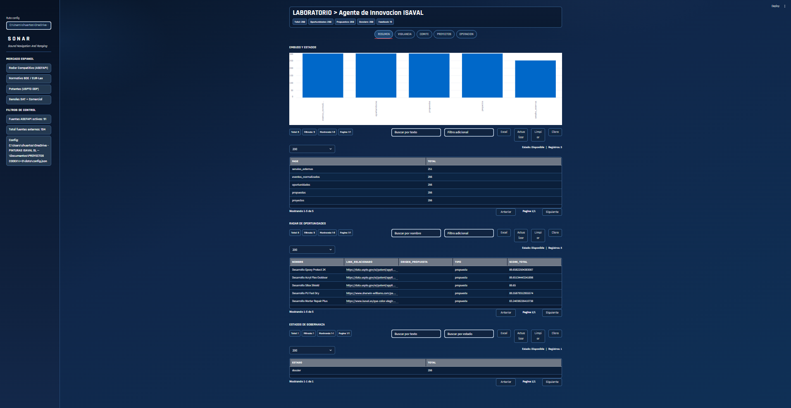
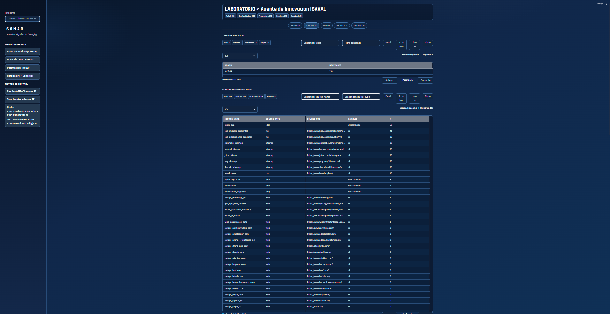
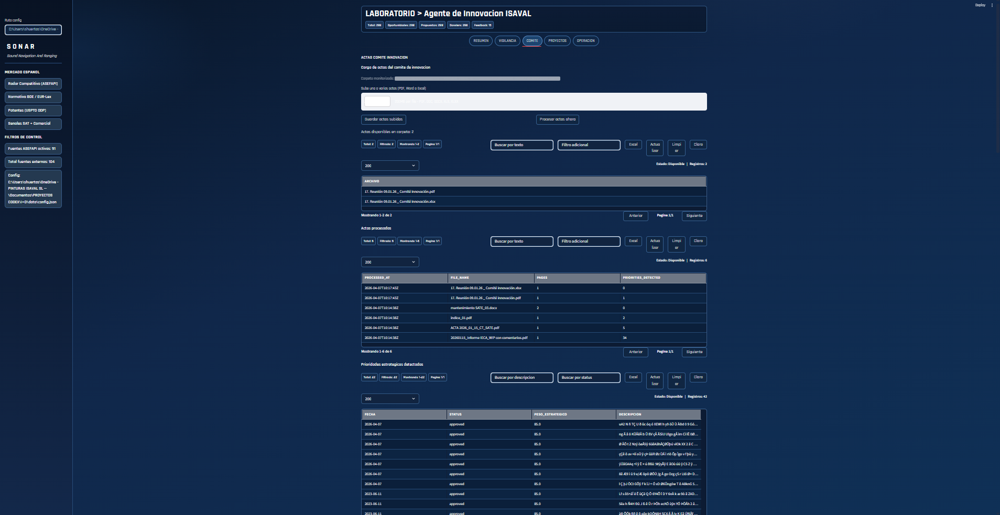
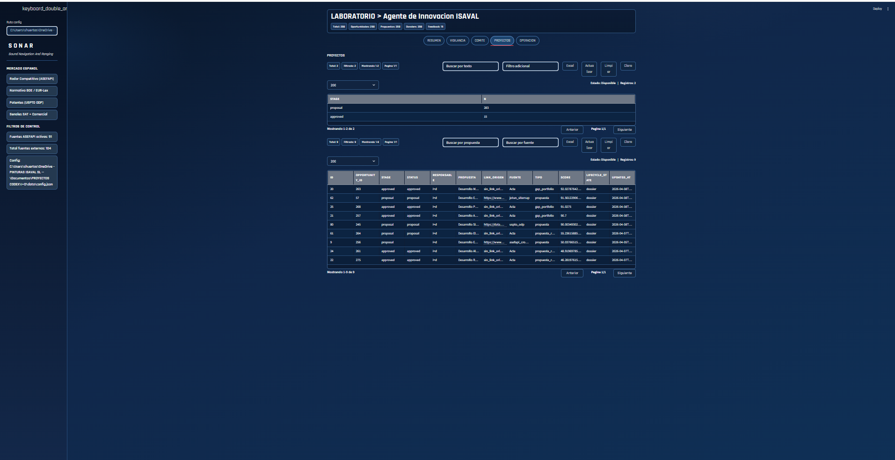

Detalle de la salida decisional con elementos de economía, riesgo y trazabilidad para priorizar mejor.
Objetivo: pasar de una vigilancia tecnológica y competitiva dispersa a un sistema interno capaz de captar señales, convertirlas en oportunidades comparables y producir dossiers estratégicos votables para comité.
La solución se ha desarrollado en entorno on-prem y opera con un flujo periódico de captura, normalización y cruce de señales. El sistema incorpora fuentes externas, señales internas derivadas de actas y dolores operativos, observabilidad por fuente y una salida final orientada a decisión.
Sobre esa base, el agente genera oportunidades, propuestas, proyectos y dossiers estratégicos con contenido suficiente para que dirección o comité no solo vea información, sino una recomendación defendible.
Esta pieza tiene valor porque ordena una parte difícil de la innovación: separar ruido de señal y convertir información heterogénea en criterio útil para decidir. No es solo una herramienta de vigilancia. Es una capa de método para dirección, comité e I+D.
Además, crea una base defendible para acumular conocimiento, revisar por qué una oportunidad se aceptó o se descartó y reducir dependencia de discusiones poco trazables.




La propuesta de Sergio Huertas convierte la vigilancia de innovación en una capacidad interna mucho más madura: mide, prioriza, documenta, aprende y deja preparada a la compañía para decidir con más velocidad y menos arbitrariedad.